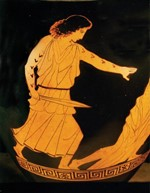

Ancient tattoos
During an ongoing program in which scientists are reanalysing mummies with new technology, tattoos were discovered. By using an infrared camera, the green smudges seen in natural lighting were clearer and the researchers were able to distinguish the original shape off some tattoos.
[1,3,4,7]
Ötzi the Iceman
This ancient mummy preserved by the freezing temperature was discovered in 1991 in the Tyrolean Alps and has the oldest example of tattoos ever found.
On his body scientists counted up to 61 different tattoos, mostly geometric figures like dots, small circles and lines, which also have been found on clay figurines and other art from the same period (3370 – 3100 cal BC).
The tattoos are placed on strategic acupuncture points and it is believed they were placed for medical purpose.
[1,3,4,5,6,7,17]
Worth mentioning is another mummy found in Russia. A supposed chieftain from the Siberian tribe called Pazyryks who was covered in tattoos, resembling a donkey, fish, rams, deer, and even mythical creatures like the griffin. like Ötzi the chieftain had circles tattooed on acupuncture points for supposed medical treatment like pain relief.
[3,4,8] back to top
Egypt
Let’s continue with the second and third oldest tattoos, discovered on Egypt mummies. The Gebelein man and woman. The couple was discovered together with 5 other mummies but was the only two containing tattoos. They are both on display in the British Museum.
The male has two tattoos of horned animals on his body, believed to be one bovid with long tail and one Barbary sheep. The female has four s-shaped tattoos on her shoulders, one staff like tattoo and a dark line across her belly.
The male tattoos are believed to be signs of virility, bravery and skill shown during hunt, power, and strength. The woman’s tattoos are more diffuse, but scientists believe that the staff like tattoo could be similar to ritual objects, symbols of power and magical status. The s-shaped tattoos are believed to be birds flying. Other findings on Egyptian and Nubian mummies has made the scientists to believe the tattoos were made for protection, transmitting the strengths of the animal portrayed and show cast and history of the bearer etc.
[1,3,4,7]
Asia
The oldest Asian mummies were found in western China and Russia from the Pazyryks tribe, as mentioned earlier, they’re believed to be from around 2000 BC. There have been findings of clay figurines and other artwork showing of even older tattoos than the mummies.
The opinions of tattoos in ancient Asia were divided, for some tribes and groups of people they were filled with mystical powers and status. While for other groups they were a sign of ownership on slaves, prisoners, and criminals like later on the yakuza who are still active to this day and famous for their cruelty and body art.
The first written Asian text about tattoos was created in 297 AD.
The book illustrated how the Japanese now adorned their bodies more for appearance than earlier reasons like spiritual or healing. It is also mention that of Japanese master tattooists, Horis who created incredibly designs, motives and stories, whose designs and colouring schemes are still used today.
Some of the most popular motives both then and now are the Kanji signs (Japanese writing that originally came from China) and of course the dragon.
In both countries the dragon symbolise power, benevolence, intelligence, wisdom, bravery and is a bearer of good luck and fortune. Some of the Chinese dragons are the earth dragon and heaven dragon who both takes care of each element. The horned dragon that symbolises strength and the hornless yellow that symbolises wisdom and knowledge.
In Japan different colours symbolises different traits like green is life and earth, black for experience and wisdom. Other currently popular motives are the koi fish, yin/yang symbol, lotus flower, cherry blossom, tiger etc.
Please do be warned! IF you choose to write something in text whether Japanese, Chinese, Taiwanese, or any language youre not familiar with, be sure that it is spelled right so you don’t end up with something horrible permanently etched on your body.
[3,4, 5, 6,9,17]
Greece
The Greeks were heavily influenced by the Persians who used the tattoo to penalize slaves, criminals, and prisoner of war. Several of these wars were against Greece, 480 BC King Xerxes invaded Greece which they emerged victorious. Some of the prisoners of war got executed and the rest was tattooed with the royal marks.
For the ancient Greeks, tattoo became a mark of pain and disgrace. There are sources stating that the Greeks might have practiced the tattooing of slaves in their own culture as well. If this was influenced or not by the Persian was not stated. But the distaste of tattoos was clear and evidence of tattoo removal remedies have been found.
Although the tattoo symbolised disgrace the Greeks where aware that not all cultures where of the same view, and that in some cultures a tattoo was a sign of wealth and status. The artists and scholars were intrigued by this fact and often used tattoos in their tales and artwork, one such culture was the Thracian people.
The Thracian people was a mercenary people mostly located in the Balkans. Completely unlike the Greeks the sign of having many and well-designed tattoos was a sign of nobility and high status while having none showed of low status.
The religious marks and ornamental decorations worn by free Thracian women was one source of inspiration for the artists, as were the slaves and travellers showing different tattoo styles. The painter Pistoxenos painted one of the earliest deer tattoos on a woman’s right arm, the name was translated to “reliable foreigner”. By absorbing foreign tattoo culture Greeks began to see the tattoo as something different than a penalty mark.
And the more frequent attempts to understand foreign uses of tattoos, exposure to different cultures and the Thracian tattoos presented in literature and art slowly changed the feel of disgrace and barbarity to fascination and eventually acceptance.
[5,6,8,17]
References